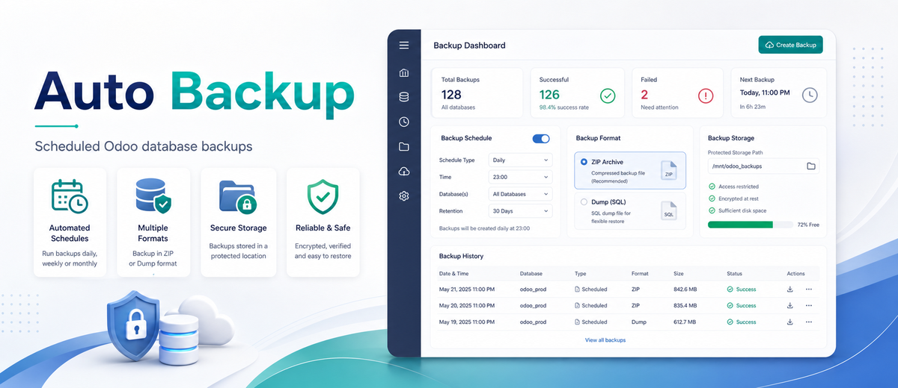
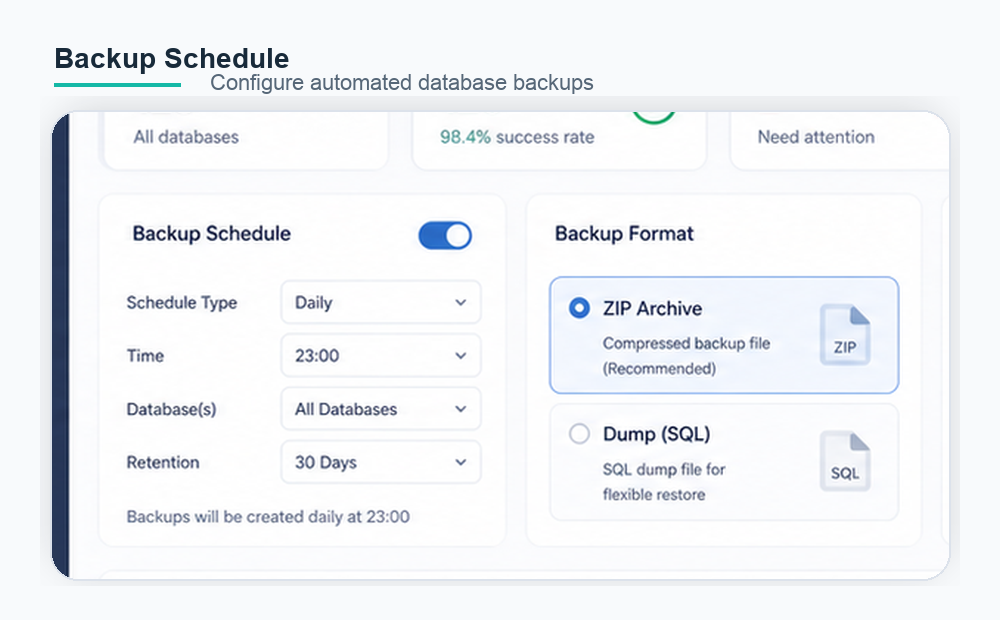
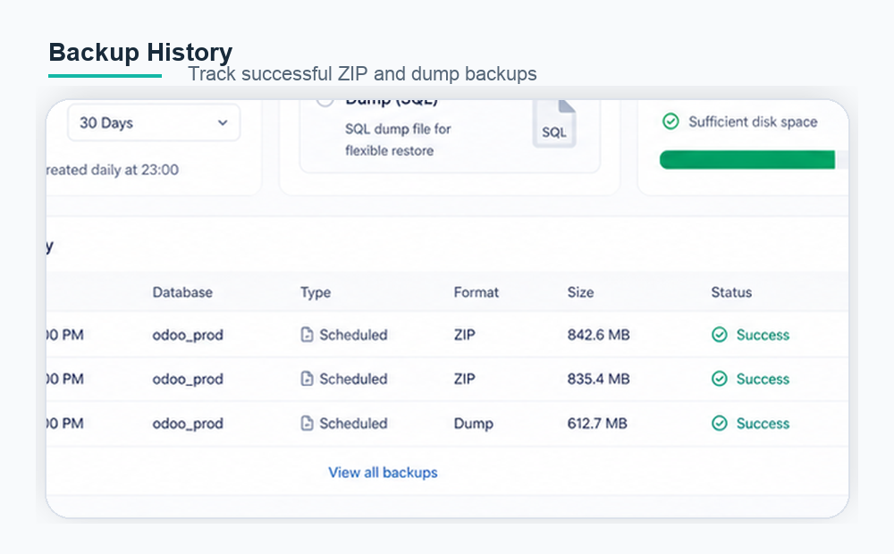

Schedule Odoo database backups to a protected server folder in ZIP or dump format.
Run automated backups from a cron-managed configuration.
Restricts backup paths to the configured base directory.

Create one or more backup destinations from an Odoo menu.
Choose Odoo ZIP exports or PostgreSQL custom dump files.
Store backup files in an administrator-controlled directory.


The server must have permission to write to the selected backup directory. PostgreSQL dump backups require the server environment to provide the `pg_dump` command.